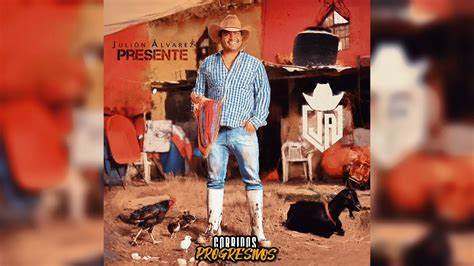

La miré pasar
Fue a paralizar
El tiempo a mi lado se hacía más lento
Yo viendo tu rostro, me entraron recuerdos
Qué casualidad
Te veo por acá
Juré que jamás volvería a pensarte
Pero creo que es tarde, me volví un cobarde
Y ahora estás aquí
Fue el destino gris
Tú y yo no cabemos en un mismo infierno
Así que prefiero largarme muy lejos
Y llega la noche
Me llega el reproche
Móntate en el coche, quítate ese broche
Soy tuyo esta noche, y tú mi ecstasy model
Me llevas al cielo
Que hasta tengo miedo
De caer de nuevo, enredarme en tu cuerpo
Mi alma está vacía, pero estoy sonriendo
Ahí te va, chiquitita
Ya volvió Junior H, ¡uh!
Tú ya sabes quién es
¿Piensas tú en mí
Como yo en ti?
¿O ya te cansaste de haberme llorado
Y ya de hace tiempo ya estoy olvidado?
¿Qué será de mí?
¿Qué será de ti?
El día de tu boda iré a celebrarlo
Pa felicitarlo y dejarle un recado
Y a la medianoche
Y que no la toques
Dile que la amas como yo la amaba
Dile quién es mejor de tú y yo en la cama
Yo la llevo al cielo
Que hasta tengo miedo
De caer de nuevo, enredarme en su cuerpo
Mi alma está vacía, pero estoy sonriendo
UN DESPERDICIO
Siempre acompañado, hay buena suerte
Y donde voy, va todo bien
Tengo el corazón contento
Pero mucho más contento si tú fueras mi mujer
Ojalá y todas tuvieran tu ternura
Y tu manera de hacer el amor también
Y si un día de ti me olvido, volvería pa' buscarte
Y pa' volverte a conocer
Pa'l amor tenemos testigos
Por la manera en que nos vemos
Tú quieres que seamos amigos
Pero sabes que no podemos
Y desde que nos conocimos sabes cuál era la intención
Antes caminaba perdido, en ti encontré la solución
Y me hice fan de todos tus gemidos y la manera, baby, en que lo hacemos
Un desperdicio sería no disfrutarnos ahora que podemos
Siempre acompañado, hay buena suerte
Y donde voy, va todo bien
Tengo el corazón contento
Pero mucho más contento si tú fueras mi mujer
Ojalá todas tuvieran tu ternura
Y tu manera de hacer el amor también
Y si un día de ti me olvido, volvería pa' buscarte
Y pa' volverte a conocer
Shorty, pasan los días, solo llamo a tu puerta
Te busco cuando destapa el sol, y
No despertar contigo es perder ya
Qué desperdicio de tiempo que no estés conmigo, acariciándonos
Dime, a ver
Bebé, ¿qué es lo que piensas?
Si todo el mundo ya sabe lo de tú y yo
Y desde que nos conocimos sabes cuál era la intención
Antes caminaba perdido, en ti encontré la solución
Y me hice fan de todos tus gemidos y la manera, baby, en que lo hacemos
Un desperdicio sería no disfrutarnos ahora que podemos
Siempre acompañado, hay buena suerte
Y donde voy, va todo bien
Tengo el corazón contento
Pero mucho más contento si tú fueras mi mujer
Ojalá todas tuvieran tu ternura
Y tu manera de hacer el amor también
Y si un día de ti me olvido, volvería pa' buscarte
Y pa' volverte a conocer
Woah-woh, woah-oh
Junior
Ey, es Rels B, mamá, yeah
Dímelo, Krizous
MADONNA
Yves Saint Laurent, y si no es Dior, que no la llamen
Le encantan todos los detalles, y ahí es donde entro yo
Sus quedantes, de empresarios a traficantes
No me asustan esos don nadie, conmigo vas a estar
Y ya no sé por dónde empezar
Tú domaste mi instinto animal
¿Cuántos Rolex te ocupo comprar?
Un besito, nada más
Le mando dinero a tus papás
Muevo el mundo si es por ti, nomás
Tú eres Madonna en la actualidad
Mi güerita flow rock star, ¡ea!
Bolsa Birkin, me pegué un tiro pa comprarla
No te preocupes por la lana, tú vales eso y más
Lady Gaga, no toma si no es con champaña
Los vidrios rápido se empañan, me besa al manejar
Y ya no sé por dónde empezar
Tú domaste mi instinto animal
¿Cuántos Rolex te ocupo comprar?
Un besito, nada más
Le mando dinero a tus papás
Muevo el mundo si es por ti, nomás
Eres Madonna en la actualidad
Mi güerita flow rock sta-a-a-ar
Mi güerita flow rock star

REGALO DE DIOS
Cuando me siento en tus brazos, se me olvida todo
Soy afortunado por tenerte a ti
Aquí, despertando a mi lado
Estoy en deuda porque llegaste a mi vida
Como si estuvieras hecha justo a mi medida
Y yo no lo pedí, solito me llegó
Y vale el doble, sí, un regalo de Dios
Destinado para mí
Voy a ser el encargado de cuidarte siempre
Que nada te falte
Mi única misión será hacerte muy feliz
En las buenas y en las malas estaré contigo
Para lo que necesites
Pase lo que pase, voy a estar ahí
La recompensa para mí
Es mirar tu linda carita sonreír
¡Ay-ay-ay, chiquita!
Es Julión Álvarez
Y su Norteño Banda, oiga, ¡ah!
Como si estuvieras hecha justo a mi medida
Y yo no lo pedí, solito me llegó
Y vale doble, sí, un regalo de Dios
Destinado para mí
Voy a ser el encargado de cuidarte siempre
Que nada te falte
Mi única misión será hacerte muy feliz
En las buenas y en las malas estaré contigo
Para lo que necesites
Pase lo que pase, voy a estar ahí
La recompensa para mí
Es mirar tu linda carita sonreír
LO TIENES TODO
Nunca había amado como a ti
Desde que me quieres comprendí
Que Dios tenía otros planes para mí
Y hasta que tú llegaste finalmente lo entendí
Era nuestro momento
Y que ya nos tocaba
Ser feliz
¿Qué más puedo pedir? Si tú lo tienes todo
Contigo me aplaqué, me hiciste a tu modo
Por ti mi corazón ya no me cabe
Aquí, en el pecho
Quiero gastar los días de mi vida a tu lado
Me gusta que nos vean tomados de la mano
Que todo el mundo sepa que me tienes
Enamorado
Que Dios tenía otros planes para mí
Y hasta que tú llegaste finalmente lo entendí
Era nuestro momento
Y que ya nos tocaba
Ser feliz
¿Qué más puedo pedir? Si tú lo tienes todo
Contigo me aplaqué, me hiciste a tu modo
Por ti mi corazón ya no me cabe
Aquí, en el pecho
Quiero gastar los días de mi vida a tu lado
Me gusta que nos vean tomados de la mano
Que todo el mundo sepa que me tienes
Enamorado
EL PRECIO DE LA SOLEDAD
Qué cobarde eres
Ya vi el miedo que me tienes
Debí de suponerlo
Pero no quería creerte
Me duele lo que hiciste
Lo acepto, sí, estoy muy triste
Pero eso se pasa con traer líquido en la panza
Y eso haré
Por tu culpa, hoy tomaré
Nomás aclárame
¿Qué dirás cuando te pregunten?
Si estás muy a gusto, si ya me olvidaste
Si ya no me extrañas, ¿qué contestarás?
¿Qué inventarás frente a tus amistades?
Para que no sepan lo que te sucede
¿Qué argumentarás cuando el dolor te invada?
Y tengas que pagar
El precio de la soledad
Me duele lo que hiciste
Lo acepto, sí, estoy muy triste
Pero eso se pasa con traer líquido en la panza
Y eso haré
Por tu culpa, hoy tomaré
Nomás aclárame
¿Qué dirás cuando te pregunten?
Si estás muy a gusto, si ya me olvidaste
Si ya no me extrañas, ¿qué contestarás?
¿Qué inventarás frente a tus amistades?
Para que no sepan lo que te sucede
¿Qué argumentarás cuando el dolor te invada?
Y tengas que pagar
El precio de la soledad
TU FALTA DE QUERER
Hoy volví a dormir en nuestra cama
Y todo sigue igual
El aire y nuestros gatos, nada cambiará
Difícil olvidarte estando aquí, oh, oh, oh
Te quiero ver
Aún te amo y, creo, que hasta más que ayer
La hiedra venenosa no te deja ver
Me siento mutilada y tan pequeña, ah, ah, ah
Ven y cuéntame la verdad
Ten piedad
Y dime por qué, no, no no, oh
¿Cómo fue que me dejaste de amar?
Yo aún podía soportar
Tu tanta falta de querer
Hace un mes solía escucharte
Y ser tu cómplice
Pensé que ya no había nadie más que tú
Yo fui tu amiga y fui tu compañera, ah, ah, ah
Ahora dormiré
Muy profundamente para olvidar
Quisiera hasta la muerte, para no pensar
Me forro pa' quitarme esta amargura, ah, ah, ah
Ven y cuéntame la verdad
Ten piedad
Y dime por qué, no, no no, oh
¿Cómo fue que me dejaste de amar?
Yo aún podía soportar
Tu tanta falta de querer
Ven y cuéntame la verdad
Ten piedad
Y dime por qué, no, no no, oh
¿Cómo fue que me dejaste de amar?
Yo aún podía soportar
Tu tanta falta de querer